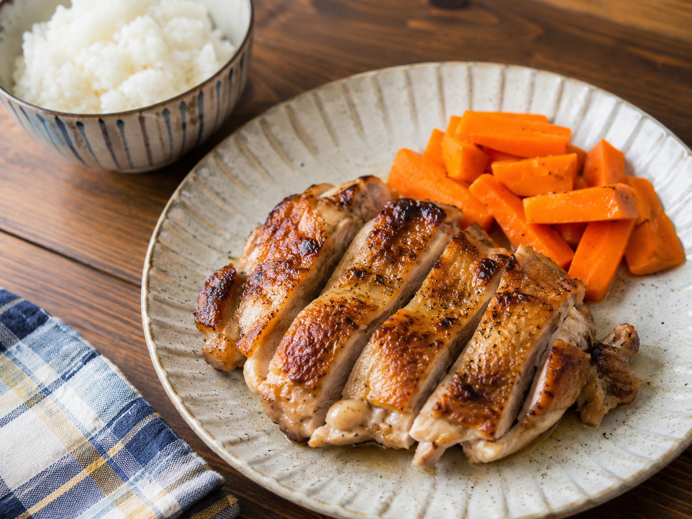

2026-06-03

置き手紙
鶏を焼き、
にんじんを添え、
米で受ける。
それだけで、
家の皿は少し外に出せる顔になる。
材料
- 鶏もも肉 1枚
- にんじん 1/2本
- ごはん 1膳
- 塩 少々
- 油 小さじ1
- しょうゆ 少々
- こしょう（あれば）
手順
- 鶏肉の両面に塩をふる
- にんじんは食べやすく切る
- フライパンに油をひき、鶏肉を皮目から焼く
- 焼き色がついたら裏返し、弱めの火で中まで火を通す
- にんじんは生のまま添えるか、同じフライパンで軽く焼く
- 皿に盛り、ごはんを添える
- しょうゆ少々で食べる
効いたこと
鶏肉は、焼くと皿の中心になる。
にんじんは、肉を料理にする赤である。
米があると、脂と塩と肉汁を受けられる。
次回
にんじんは、生で添えるか、軽く焼くかを比べる。
しょうゆだけで足りるか、梅干しを添えるかも見る。
焼いた後に切ると、皿として見えやすい。